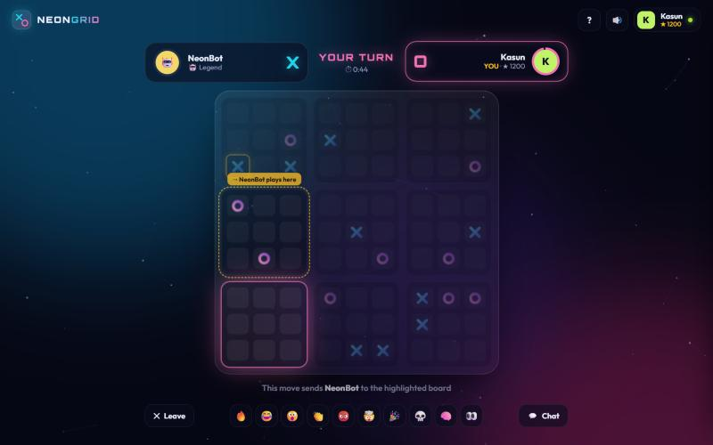
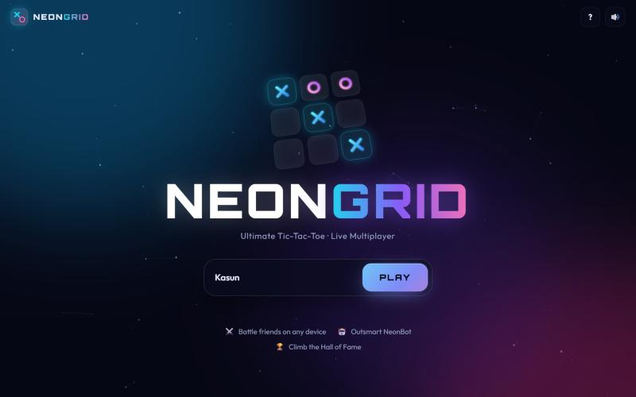
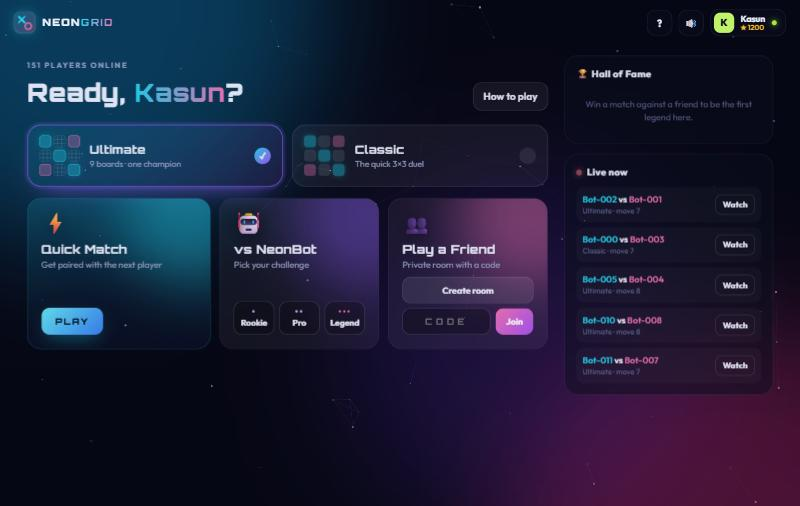
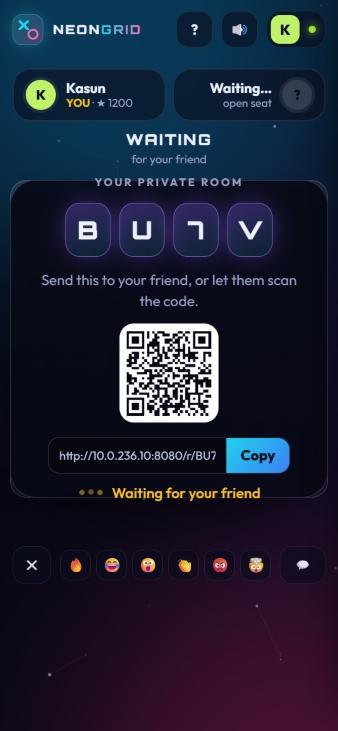
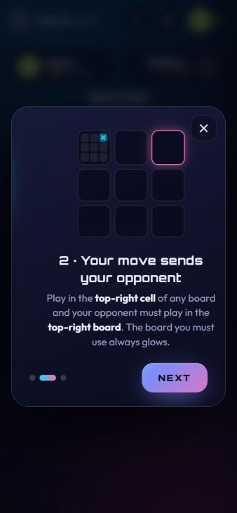
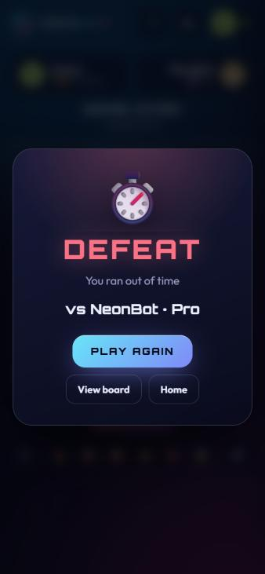
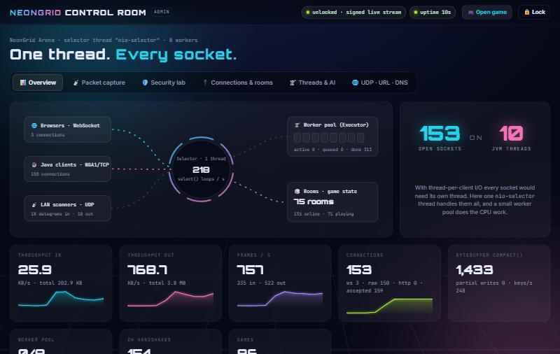
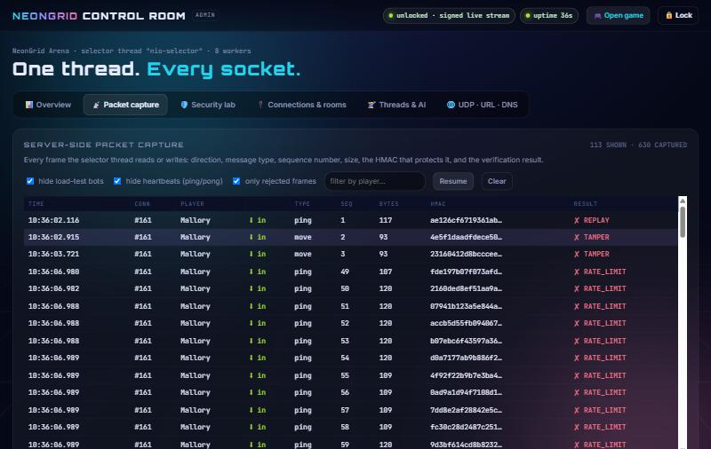
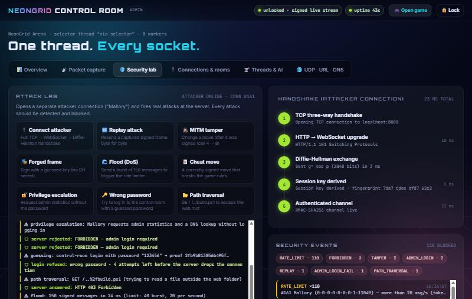

| Member | Index number | Concept implemented |
|---|---|---|
| Member A — name | … | Java NIO reactor |
| Member B — name | … | TCP, WebSocket & URL/DNS |
| Member C — name | … | Multithreading & AI |
| Member D — name | … | UDP LAN discovery |
| Member E — name | … | Secure network programming |
NeonGrid is a multiplayer board-game platform built for Assignment 02, based on the suggested project "Multiplayer Board Game Platform". A Java server hosts turn-based games of Ultimate Tic-Tac-Toe (a 9×9 strategy variant) and Classic Tic-Tac-Toe. It creates and joins rooms, matches players, validates every turn on the server, keeps all players and spectators in sync, and shows the results.
We designed the product as two separate applications:
/) is for players. It contains no technical information: a splash screen, home menu, matchmaking, friend rooms with QR codes, an animated how-to-play guide, a board that always shows where you may play, chat and emoji reactions, and a victory screen./control) is password-protected and meant for evaluators and administrators. It makes the networking visible without disturbing the players: a live server dashboard, a server-side packet capture, an attack lab, the handshake view, connections, threads, UDP, URL and DNS tools.The server uses only the JDK. Its core is a hand-written Java NIO reactor: one Selector thread serves HTTP, WebSocket, a custom binary TCP protocol and UDP discovery at the same time. CPU-heavy work runs on a thread pool, and every message is protected by a key that is agreed with Diffie-Hellman and never sent over the network.
| Area | Features |
|---|---|
| Gameplay | Ultimate 9×9 and Classic 3×3 · Quick Match · private rooms (4-letter code, invite link, QR code) · spectating · chat and reactions · rematch with side swap · turn clock · Elo "Hall of Fame" |
| Player guidance | Playable board glows and others dim · hover preview "this move sends your opponent here" · free-move warning · 3-step animated tutorial shown before the first Ultimate game |
| AI opponent | NeonBot (Rookie / Pro / Legend): Monte-Carlo Tree Search for Ultimate and minimax with alpha-beta pruning for Classic, run as a Callable on the worker pool |
| Clients | Browser game (desktop and phone) · terminal client using blocking java.net.Socket · NIO load-testing bot swarm · UDP LAN scanner |
| Resilience | Automatic reconnect with session resume: a player who refreshes the page or loses Wi-Fi keeps their seat for 30 s |
| Control Room | Password login (challenge-response) · sockets-vs-threads dashboard · packet capture · attack lab (9 attacks) · connections and rooms · AI telemetry · UDP/URL/DNS tools |
The player only sees the game. All network activity happens invisibly underneath. The flow is splash → home → match → result.





The server follows the Reactor pattern. A single thread named nio-selector owns a Selector where every channel is registered: the listening ServerSocketChannel (OP_ACCEPT), every client SocketChannel (OP_READ, plus OP_WRITE only while output is queued) and a DatagramChannel for UDP. Slow work is handed to an ExecutorService, and its result is applied back on the selector thread. Because game state is touched by one thread only (thread confinement), rooms need no locks.
Browser (game / control) ConsoleClient (blocking Socket) BotSwarm (NIO) LanScanner (UDP)
│ ws://host:8080/ws │ "NGA1"+[len][frame] │ │ broadcast :8888
└──────────────┬─────────────┴──────────────┬───────────────┘ │
▼ ▼ ▼
┌─────────────────── nio-selector thread (Reactor, one Selector) ─────────────────────┐
│ ServerSocketChannel OP_ACCEPT · SocketChannel OP_READ/OP_WRITE · DatagramChannel │
│ protocol sniffing → HTTP | WebSocket | RAW · ByteBuffer read→flip→decode→compact │
│ SecureLink (HMAC + seq) → Lobby / Rooms (thread-confined state) · timers · capture │
└──────────────┬────────────────────────────────────────────▲─────────────────────────┘
│ submit(Callable) │ Future.isDone() → get()
▼ │
ExecutorService "arena-worker-1..N": AI search · DH modPow · DNS · disk writes
| Package | Classes and responsibility |
|---|---|
arena.server | Reactor (selector loop, timers, worker hand-off) · Connection (buffers, framing, sniffing, rate limit, packet capture) · Http, WebSocket · Discovery (UDP) · Lobby (sessions, matchmaking, routing), SecureHandshake (DH + resume), AdminConsole (Control Room login and tools), Room, Session · Leaderboard, Metrics, NetUtil |
arena.game | Board: rules for both modes · AiPlayer: Callable<Result> MCTS / minimax |
arena.common | Crypto: DH, SHA, HMAC · SecureLink: sign / verify / sequence numbers · Json |
arena.client | ConsoleClient · BotSwarm · LanScanner · Handshake |
web/ | index.html, game.css, js/game/*.js (game, split into modules: main, board, home, chat, result, tutorial…) · control.html, control.css, control.js (Control Room) · net.js (shared pure-JS SHA-256/HMAC, BigInt DH, secure socket) |
One TCP port speaks three protocols, and the first four bytes decide which (protocol sniffing): NGA1 selects the RAW protocol used by the Java clients, and anything else is HTTP. GET /ws with Upgrade: websocket is answered with 101 Switching Protocols.
// RAW (Java clients) WebSocket (browsers) [int32 length][UTF-8 payload] FIN|opcode, MASK|len(7/16/64 bit), mask key, masked payload // handshake (plain) C→S {"t":"hello","name":"Nilu","client":"web","dh":"g^a mod p","resume":{"sid","proof"}?} S→C {"t":"welcome","dh":"g^b mod p","sid":"…","tokenWrapped":"…"} // K = SHA-256(hex(g^ab mod p)) // every later frame, both directions <HMAC-SHA256(K, json) as 64 hex>{"t":"move","cell":40,"seq":7} // control-room login (password never sent) {"t":"admin_login","proof": HMAC( SHA-256(password), serverNonce )}
| # | Concept | Lecture | Main source files | Demonstrated in |
|---|---|---|---|---|
| 1 | Java NIO reactor | NIO | Reactor, Connection, BotSwarm | Control Room · Overview |
| 2 | TCP & application protocols | L2 | Http, WebSocket, ConsoleClient | Packet capture · terminal client |
| 3 | Multithreading, Callable/Future | L5 | AiPlayer, Reactor.submit, Leaderboard | Control Room · Threads & AI |
| 4 | UDP discovery | UDP | Discovery, LanScanner | Terminal client · UDP panel |
| 5 | Addressing, URLs, DNS | L4 | Http, NetUtil | Invite link/QR · URL & DNS tools |
| 6 | Secure network programming | Secure NP | Crypto, SecureLink, net.js, SecureHandshake, AdminConsole | Control Room · Security lab |
Traditional I/O needs one blocking thread per client. NeonGrid instead registers every channel with one Selector in non-blocking mode. The loop waits in select(timeout), where the timeout is the time until the next turn clock or timer, and dispatches accept, read and write readiness.
while (running) { int ready = wait == 0 ? selector.selectNow() : selector.select(wait); Iterator<SelectionKey> it = selector.selectedKeys().iterator(); while (it.hasNext()) { SelectionKey key = it.next(); it.remove(); dispatch(key); } runTasks(); completeJobs(); runTimers(); // cross-thread tasks, finished Futures, turn clocks }
ByteBuffer discipline: channel.read(in) → in.flip() → decode every complete frame → in.compact(). compact() keeps a half-received frame at the front of the buffer so the next read appends to it, which is the "LOGIN Amal\nPASS" scenario from the lecture. Frame headers are first peeked with an absolute getInt(position), so nothing is consumed until the whole frame has arrived. Writes try channel.write() immediately. After a partial write, the rest is queued and OP_WRITE is enabled until the queue drains. Static files are read with FileChannel, and the BotSwarm client drives hundreds of SocketChannels with OP_CONNECT/finishConnect() from one thread.
The TCP lifecycle appears at every layer: the three-way handshake completes when accept() returns, and a read of -1 means the peer sent FIN. On top of the TCP byte stream we implemented three framing protocols ourselves: HTTP/1.1 (static files, JSON endpoints, a 302 short-link redirect, security headers), WebSocket (the Sec-WebSocket-Accept SHA-1/Base64 handshake, 7/16/64-bit lengths, masking, fragmentation, ping/pong/close), and the NGA1 length-prefixed protocol. ConsoleClient deliberately uses blocking java.net.Socket with readInt()/readFully() and three threads (reader, keyboard, heartbeat). It plays against browser users on the same server, showing that both I/O models interoperate.
The AI is the slowest task in the system: Monte-Carlo Tree Search runs 65,000–85,000 random playouts per move. It is implemented as AiPlayer implements Callable<Result> and submitted to a fixed ThreadPoolExecutor, which also runs the 2048-bit Diffie-Hellman modPow, DNS lookups and leaderboard writes.
FutureTask<T> f = new FutureTask<T>(job) { protected void done() { selector.wakeup(); } }; pending.add(new PendingJob<>(f, onResult, onError)); workers.execute(f); // later, on the selector thread: if (job.future.isDone()) onResult.accept(job.future.get()); // get() never blocks here
Overriding FutureTask.done() guarantees the selector wakes only after the result has been published. That fixes a race in which the selector could wake up before the Future was marked done. cancel(true) interrupts a search when its room closes. The leaderboard is shared between the selector and a worker, so its methods are synchronized. Metrics use lock-free LongAdders. The Control Room's Threads & AI panel lists every bot move with its algorithm, playouts, time and the worker thread that ran it.
A non-blocking DatagramChannel (port 8888, SO_BROADCAST) is registered on the same Selector as the TCP sockets. LanScanner uses java.net.DatagramSocket to send the 20-byte query NEONGRID_DISCOVER v1 to 255.255.255.255, to each interface's directed broadcast address and to loopback. It sends three times because UDP is unreliable, and collects the JSON beacons (about 250 bytes: name, TCP port, LAN IPs, players, rooms). The terminal client and the bot swarm use this, so no IP address has to be typed.
→ UDP query 20 bytes to 255.255.255.255:8888 → UDP query 20 bytes to 192.168.8.255:8888 ← beacon 247 bytes from 10.0.236.10:8888 ✔ 10.0.236.10 tcp:8080 "NeonGrid Arena" players=0 rooms=0 (27 ms)
NetworkInterface enumeration keeps private (site-local) IPv4 addresses. The address of the default-route interface is found by "connecting" a UDP socket, which sends no packet, and is put first, so invite links work for phones on the same Wi-Fi.http://192.168.x.x:8080/r/CODE, shown as a link and a QR code. The server answers 302 Found → /?room=CODE, and the browser reads the query string. Requests are parsed with java.net.URI. The Control Room's URL tool splits any URL into scheme, user-info, host, port (defaults come from java.net.URL), path, query and fragment, recognises opaque URNs, and shows the DNS hierarchy.getAllByName, IPv4 and IPv6) and reverse (getCanonicalHostName) lookups block, so they run on worker threads. Every new connection is reverse-resolved for the connection table.Players join over plain http:// on campus or public Wi-Fi, which is the threat model from the Secure NP activity: eavesdropping, MITM, tampering, replay and DoS. Browsers disable crypto.subtle on insecure origins, so SHA-256 and HMAC are implemented in plain JavaScript and Diffie-Hellman uses BigInt. The Java side uses MessageDigest, Mac and BigInteger.
| Concept | Implementation |
|---|---|
| Key exchange | Diffie-Hellman, RFC 3526 group 14 (2048-bit safe prime, checked with isProbablePrime), 256-bit secrets, peer value validated. Only ga and gb cross the network. |
| Integrity / authenticity | Every frame carries HMAC-SHA256(K, json), compared in constant time. Edits in transit and frames forged without K are rejected as TAMPER. |
| Replay protection | A strictly increasing seq in both directions. Resent frames are rejected as REPLAY. |
| Player authentication | The session token travels encrypted (XOR with SHA-256(K‖"token")). To resume, the client proves ownership with HMAC(token, newDhPublic). |
| Admin authentication | The Control Room uses challenge-response: the server sends a per-connection nonce, and the browser returns HMAC(SHA-256(password), nonce). The password never travels, a captured proof is useless on any other connection, and the connection is dropped after 5 failed attempts. |
| Authorization | Statistics, packet capture, DNS and URL tools are admin-only commands (FORBIDDEN otherwise). Spectators cannot move, and players move only on their turn and on legal cells (INVALID_MOVE). |
| DoS mitigation | Token bucket (40 burst, 20 msg/s) before any expensive work · 64 KB frame limit · 4 MB output backlog limit · idle/slowloris timeouts · connection cap. |
| Best practices | Input validation, path-traversal blocking (403), output escaping, security headers, no internals in error messages. |
wss://) with a CA-signed certificate.The Control Room is a separate page that makes the networking visible. It connects over the same secure WebSocket as a player, then unlocks with the admin password. Its tabs are Overview, Packet capture, Security lab, Connections & rooms, Threads & AI, and UDP · URL · DNS.



| Test | Result |
|---|---|
| Game vs NeonBot (all levels): forced board, dimming, hover preview, claimed boards, win line, result screen, rematch | Pass |
| Two players via Quick Match and via a private room with code, link and QR; Elo update on the Hall of Fame | Pass |
| Terminal client (blocking Socket) finds the server by UDP and plays | Pass |
| Kill the connection or refresh mid-game → "Connection lost" → automatic resume into the same seat | Pass |
| Phone layout (375 px): splash, home, game, friend room, result and tutorial with no horizontal scroll | Pass |
| Control Room: wrong password refused ("4 attempts left"), correct password unlocks, statistics hidden without login | Pass |
| Attack | What the attacker sends | Server response |
|---|---|---|
| Replay | A captured signed frame, resent byte for byte | REPLAY — seq already used |
| MITM tamper | Body signed with cell:4, changed to cell:8 | TAMPER — HMAC mismatch |
| Forgery | Frame signed with a random key | TAMPER — HMAC mismatch |
| Cheat | Valid signature, but the sender is a spectator or not in a room | SPECTATOR / NO_ROOM |
| Privilege escalation | Requests admin statistics and DNS without logging in | FORBIDDEN |
| Password guessing | Wrong password proof | Refused, connection dropped after 5 tries |
| Path traversal | GET /..%2fbuild.ps1 | HTTP 403 Forbidden |
| Flood (DoS) | 150 messages in about 20 ms | RATE_LIMIT — 110 dropped |
| Silent sockets | Connections with no traffic | IDLE — closed (45 s) |
BotSwarm opened hundreds of real secure TCP connections from one client thread. In a 300-bot soak run the server held 301 sockets on 10 JVM threads (1 selector + 8 workers + main/JVM) and processed 57,916 moves and 2,620 games with 0 dropped connections, 0 server exceptions and 0 MAC failures, at about 1,500 frames per second.
| Time | Member | Script |
|---|---|---|
| 0:00–2:00 | A · NIO | Start the server and open /control (password). Run ./scripts/run-bots.ps1 --bots 300: sockets climb to about 300 while the JVM stays at about 10 threads. Explain the select loop and flip → decode → compact. |
| 2:00–4:00 | B · TCP/URL | Packet capture: plain hello/welcome, then signed frames, the WebSocket 101 upgrade and the handshake panel. Create a friend room: a phone scans the QR, the /r/CODE 302 redirect brings it into the game, and the two play live. Use the URL and DNS tools. |
| 4:00–6:00 | C · Threads | Play NeonBot Legend while Threads & AI lists each move (≈80,000 playouts on arena-worker-N) and every other game keeps running. Explain Callable/Future and the synchronized leaderboard. |
| 6:00–8:00 | D · UDP | Run ./scripts/run-client.ps1 with no IP: broadcast query and beacon. Join the browser player's room from the terminal, and show the UDP panel. |
| 8:00–10:00 | E · Security | Explain the challenge-response login, fire the 9 attacks in the Security lab and show the security log, then turn Wi-Fi off and on and show the session resume. |
./scripts/build.ps1 · allow Java through Windows Firewall on Private networks · laptop and phones on the same Wi-Fi (or a phone hotspot) · game on one screen, /control on another../scripts/build.ps1 # javac --release 17 → out/ and neongrid-arena.jar ./scripts/run-server.ps1 [--admin-pass MySecret] # TCP 8080 (HTTP+WebSocket+NGA1), UDP 8888 # game: http://localhost:8080/ phones: http://<LAN-IP>:8080/ # control: http://localhost:8080/control (default password arena-admin) ./scripts/run-client.ps1 # terminal client (UDP discovery) ./scripts/run-bots.ps1 --bots 300 # load test
SSLEngine for confidentiality and certificate-based server authentication.NeonGrid delivers a polished multiplayer game that players can enjoy without seeing any technical detail, together with a separate, password-protected Control Room in which every network concept from the module can be observed live. One NIO selector thread served 300 concurrent secure clients across three TCP protocols and a UDP service. CPU-heavy work ran on a thread pool through Callable/Future, and every message was authenticated and protected against replay with keys agreed by Diffie-Hellman. Each of the six concepts is a separate module that its owner can explain and demonstrate.